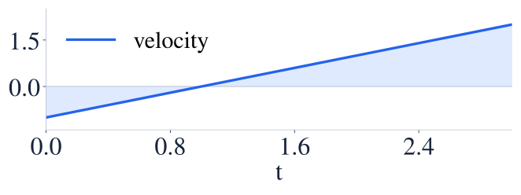
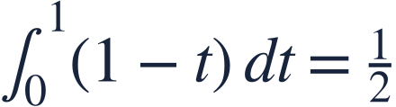
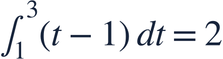

Displacement and total distance
변위와 이동거리
Displacement allows cancellation; total distance counts every part of the trip positively.
변위에서는 반대 방향 이동이 상쇄되지만 이동거리는 모두 양수로 셉니다.
Displacement allows cancellation; total distance counts every part of the trip positively.
변위에서는 반대 방향 이동이 상쇄되지만 이동거리는 모두 양수로 셉니다.
Time is in seconds and velocity is in m/s. Split where velocity changes sign.
시간은 초, 속도는 m/s입니다. 속도의 부호가 바뀌는 점에서 나누세요.

The integral of |v| adds the magnitudes of the negative and positive regions.
|v|의 적분은 음의 영역과 양의 영역의 크기를 모두 더합니다.
Signed areas partially cancel.
부호가 다른 넓이는 일부 상쇄됩니다.


For distance, reverse the sign on the negative-velocity interval.
이동거리는 속도가 음수인 구간의 부호를 바꿔 적분합니다.
Distance is at least the magnitude of displacement.
이동거리는 변위의 절댓값 이상입니다.
Taking the absolute value after integrating loses reversals of direction.
적분한 뒤 절댓값만 취하면 방향 전환을 놓치게 됩니다.
Find displacement and total distance.
변위와 총 이동거리를 구하세요.